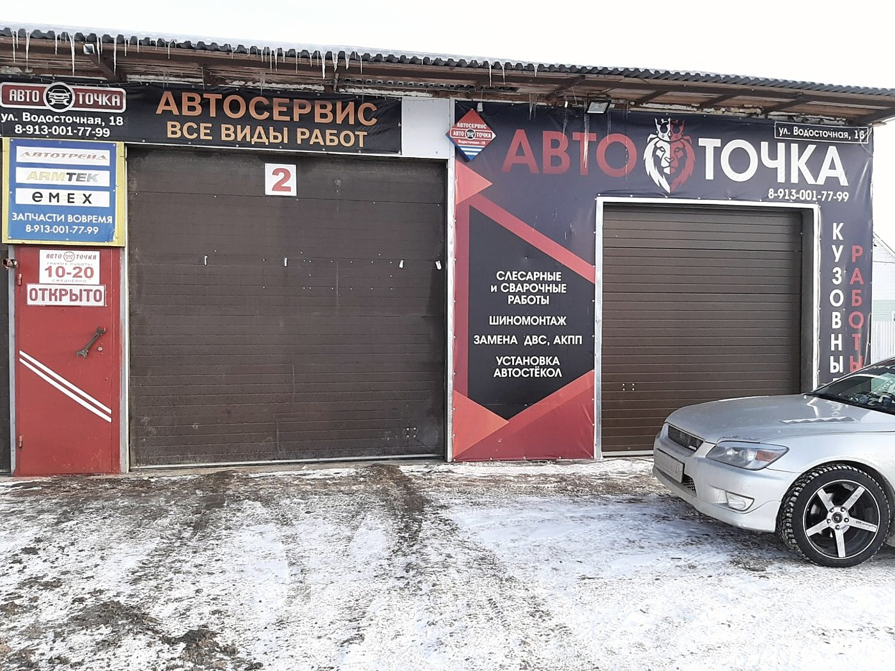
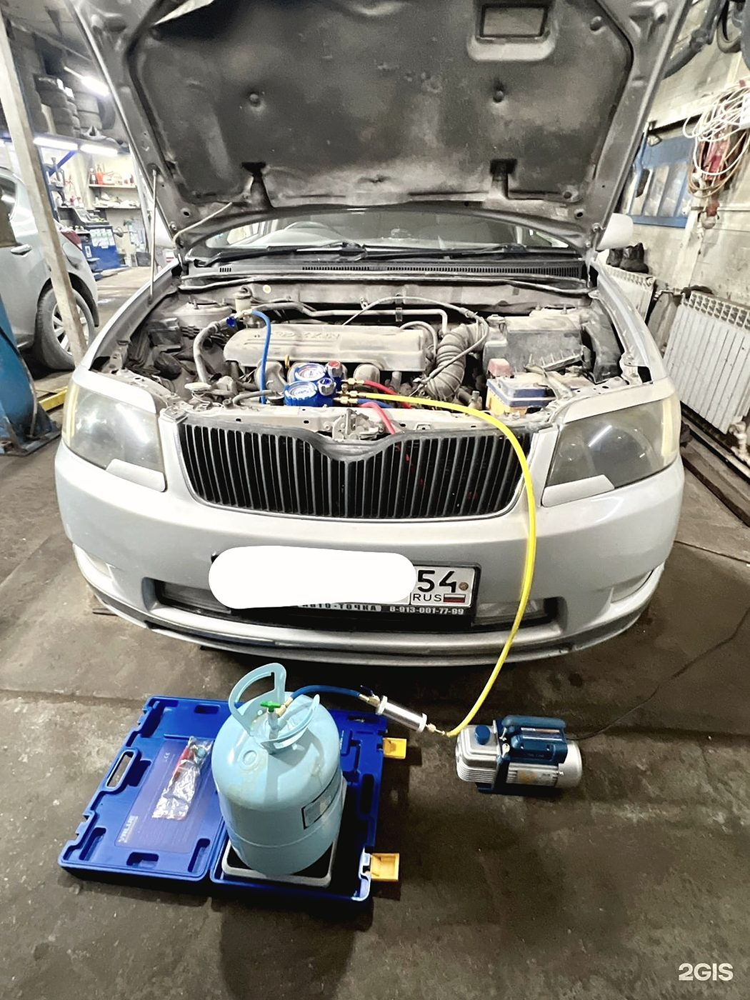
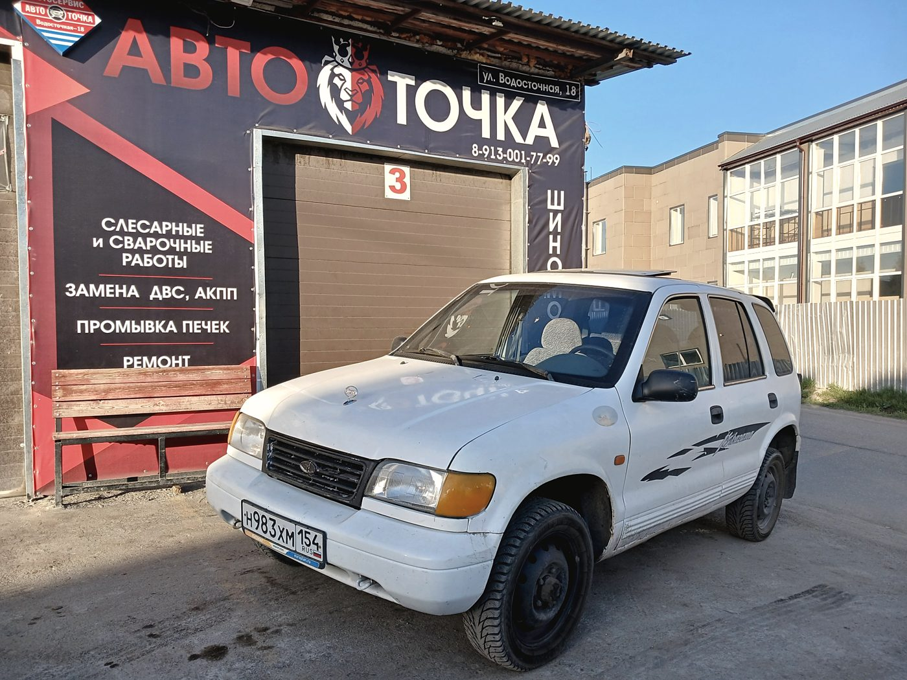
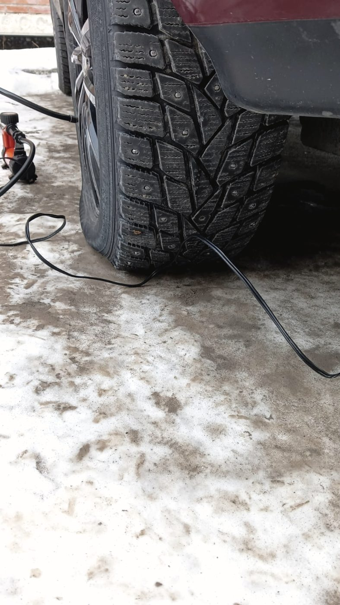

Автосервис в Бердске · Водосточная улица, 18
Одна точка
вместо пяти адресов
Ходовая, двигатель, коробка, 3D-развал, шиномонтаж, кондиционер, сварка по кузову и промывка печки — всё на одной площадке. От карбюратора на УАЗе до развала на Lexus.

Одна точка
Куда обычно едут
по очереди — и что
закрывается здесь
Обычный сценарий: развал в одном месте, шиномонтаж во втором, кондиционер в третьем, сварка в четвёртом. Здесь всё это делают на одном заезде — и не отправляют «поищите, кто возьмётся».
Стенд на месте. Углы выставляют сразу после ремонта подвески — не нужно ехать настраиваться отдельно.
Переобувка, ремонт, балансировка и сезонное хранение второго комплекта.
Заправка, поиск утечек, промывка радиатора печки — то, за что берутся далеко не везде.
Пороги, днище, глушитель. Не нужно искать отдельного сварщика с гаражом.
Карбюратор сегодня умеют перебирать единицы. Здесь умеют — и берутся.
Зимой машина не завелась — отогреем и заведём. Сибирская услуга, которая нужна пару раз за зиму, но очень нужна.
Работы
Что делаем
Ходовая часть
Рычаги, шаровые, сайлентблоки, стойки. Стук ищут по факту, а не по прайсу — подвеску перебирают за день.
3D развал-схождение
Параметры выставляются точно, без последующих доводок — по отзывам это то, за чем сюда специально едут.
Компьютерная диагностика
Ошибки, датчики, электрика. Говорим, что менять нужно, а что подождёт.
Двигатель и МКПП
Ремонт бензиновых моторов и механических коробок вплоть до замены агрегата.
Инжекторы и карбюраторы
Чистка форсунок, регулировка, переборка карбюратора. Для старой техники это часто единственный вариант.
Замена масла
Двигатель, коробка, редукторы. С проверкой того, что видно заодно.
Тормоза
Колодки, диски, обслуживание суппортов.
Выхлопная система
Ремонт, замена элементов, сварка глушителя и приёмной трубы.
Климат и печка
Заправка кондиционера, поиск утечек, промывка радиатора отопителя.
Шиномонтаж и хранение
Переобувка, ремонт, балансировка, замена колодок заодно, хранение комплекта.



Марки
Берём и японцев,
и корейцев, и наших
Не отказываем из-за возраста машины или марки. Это редкость: обычно чем старше автомобиль, тем сложнее найти, кто за него возьмётся.
Отзывы · 4,8 из 5 по 438 оценкам в 2ГИС
«Объездил кучу сервисов с этой подвеской, везде или дорого, или отфутболивали. Здесь и ценник адекватный, и сделали по уму»
Артем Бушмелев · 23 июня 2026
Мастера здесь действительно универсальные, делают буквально всё: от шиномонтажа и профессионального 3D-развала до сложного ремонта вроде замены двигателя или АКПП. Ещё у них можно сделать качественные сварочные работы по кузову и промывку печки.
Сергей Сатушкин · 1 июля 2026
Цены ниже, чем в сетевых сервисах, на треть наверное. Приехал поменять колодки и обслужить суппорты — всё сделали качественно.
Даниил Григоренко · 24 июня 2026
Контакты
Водосточная, 18
Бердск, Новосибирская область